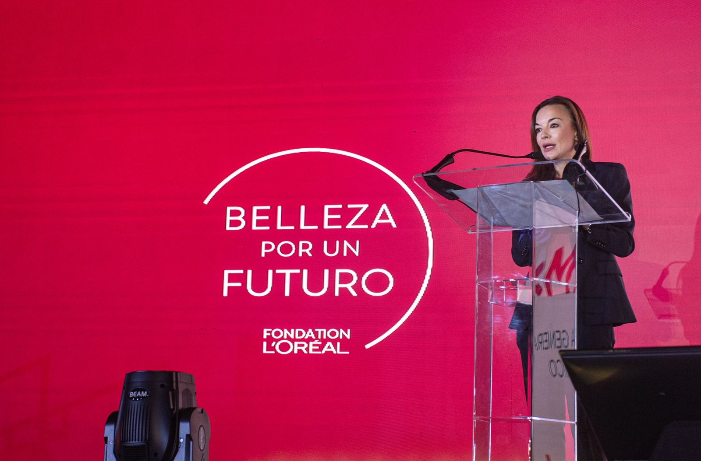
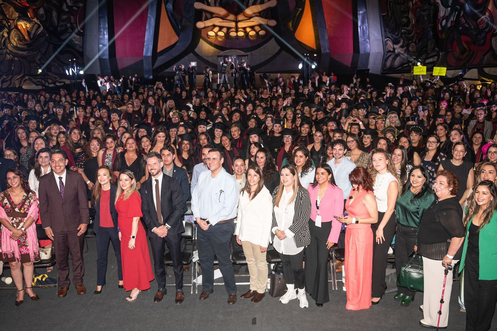
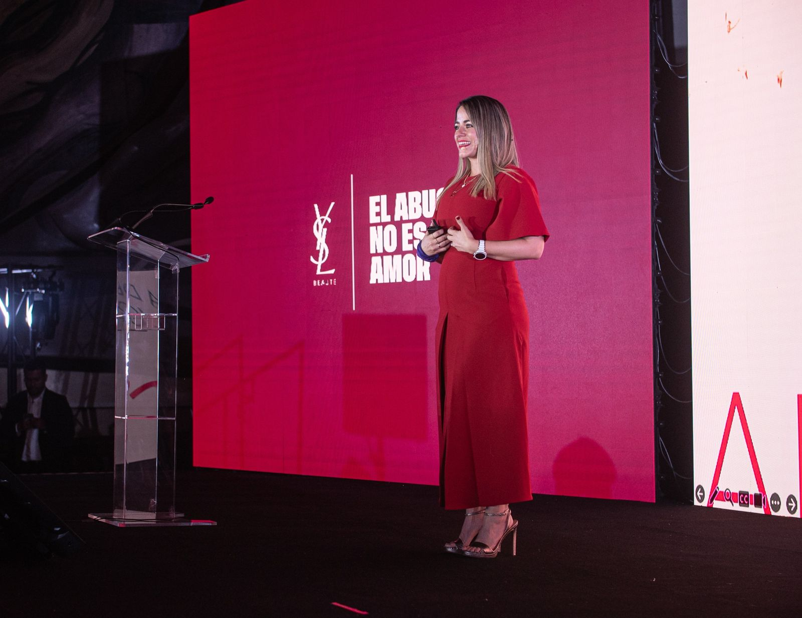

El programa “Belleza por un Futuro” celebró la graduación de más de 1000 mujeres; un evento emocionante y lleno de inspiración, realizado en el Polyforum Siqueiros y conducido por la periodista Paola Rojas. Esta celebración, que coincidió con el mes de la Mujer, no solo festejo los logros y el esfuerzo de cada una de las graduadas, sino que también reflejó el firme compromiso de L'Oréal Groupe México con la igualdad de género y el empoderamiento femenino.
En este evento celebraron un logro mucho más grande: su transformación personal. “Belleza por un Futuro” ha sido una puerta abierta para muchas de ellas, dándoles herramientas que no solo les permiten ganarse la vida, sino también tomar control de sus futuros y convertirse en agentes de cambio en sus comunidades.
Fue un reconocimiento a las habilidades adquiridas, sino una afirmación de que cuando las mujeres se apoyan y se brindan oportunidades, pueden superar cualquier barrera. La graduación simboliza el primer paso hacia una nueva vida llena de posibilidades, autonomía y esperanza.
L'Oréal Groupe México, en colaboración con Casa Gaviota, sigue demostrando con acciones concretas que invertir en las mujeres es invertir en un futuro mejor para todos.
“Es importante ser la primera pero tampoco hay que dejar de ser la última en nuestras familias” comentó Paola Rojas.
"Belleza por un Futuro", en colaboración con Casa Gaviota, ha transformado la vida de más de 4,250 mujeres en situación vulnerable, brindándoles formación gratuita en maquillaje y estilismo para impulsar su independencia social y económica. Con el objetivo de alcanzar las 5,000 graduadas para 2025, se espera que 932 mujeres más (120 en estilismo y 816 en maquillaje) se unan a este grupo de empoderadas profesionales este año, ampliando el impacto positivo del programa en la sociedad mexicana.
“Ver a tantas mujeres llenas de valentía y entusiasmo es realmente conmovedor. "Belleza por
un Futuro" es un proyecto que ocupa un lugar muy especial en mi corazón, y me siento inmensamente
feliz de celebrar este gran logro con todas ustedes. Creemos firmemente en el papel central de la
mujer en el desarrollo de la sociedad, por ello nos comprometemos a crear un entorno donde todas
las personas, independientemente de su género, tengan acceso a las mismas oportunidades” mencionó
Deborah Armstrong, presidenta y CEO de L'Oréal Groupe en México.
"En L'Oréal Groupe México, creemos firmemente en el poder de la belleza para transformar vidas.
"Belleza por un Futuro" es una muestra de nuestro compromiso con la sociedad mexicana, brindando
a miles de mujeres las herramientas necesarias para construir un futuro mejor para ellas y sus f
amilias". Mencionó Araceli Becerril, directora de Responsabilidad Corporativa en L'Oréal Groupe México,
“Es muy gratificante ver el desarrollo y evolución de las estudiantes, llegar a este momento donde
se gradúan como maquillistas y estilistas profesionales, es sin duda una satisfacción conjunta” dijo
Dolores Blancas, directora de Casa Gaviota.
>
Como parte de su compromiso, L'Oréal Groupe México lleva a cabo un seguimiento puntual de todas las egresadas durante los dos años posteriores a la finalización de sus estudios, brindándoles acompañamiento durante su proceso de inserción a la vida laboral, dando a conocer que más del 70% de las mujeres graduadas tienen independencia económica, cuentan con ingresos propios y, gracias a las herramientas otorgadas han podido alejarse de círculos de violencia.
Esta iniciativa representa una oportunidad para que las mujeres que participan en ella se conviertan en agentes de cambio en sus propias vidas, las de sus familias y en sus comunidades. L'Oréal Groupe México y Casa Gaviota reafirman su compromiso de seguir impulsando este programa, convencidos de que la belleza, la educación y el empoderamiento son herramientas fundamentales para construir un futuro más justo e igualitario para todas.